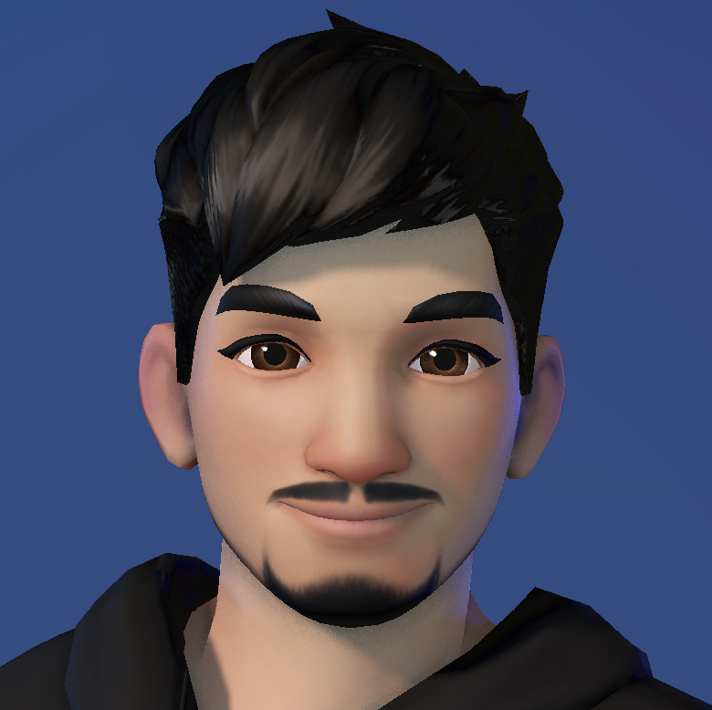

¡Hola! Soy Joel Mojal, desarrollador front-end, graduado como técnico superior en programación.
Sobre mi
Persona de baja estatura que programa, capaz de centrar un sin morir en el intento.
HTMLCSSJavaScript
TypeScriptPythonReact
PHPMySQLAstro
Estudios
Técnico Superior en Programación
Jaume Viladoms - SabadellTécnico en MicroInformatica y redes
Jaume Viladoms - SabadellPuestos de Trabajo
Tecnico Preventivo Departament d'Educació
Semic - ManresaProgramador PHP & JAVA
Terracom - Terrassa
🟢 Disponible para trabajar en 15 dias